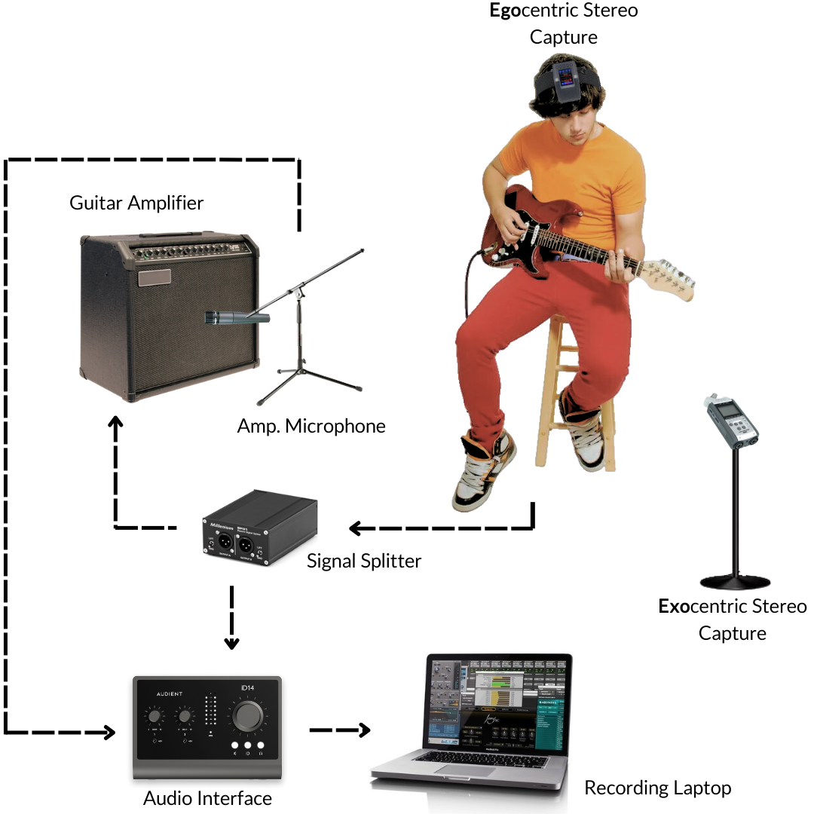

Guitar-TECHS: An Electric Guitar Dataset Covering Techniques, Musical Excerpts, Chords, and Scales
ICASSP 2025 Paper:

Abstract
Guitar-related machine listening research involves tasks like timbre transfer, performance generation, and automatic transcription. However, small datasets often limit model robustness due to insufficient acoustic diversity and musical content. To address these issues, we introduce Guitar-TECHS, a comprehensive dataset featuring a variety of guitar techniques, musical excerpts, chords, and scales. These elements are performed by diverse musicians across various recording settings. GuitarTECHSincorporates recordings from two stereo microphones: an egocentric microphone positioned on the performer’s head and an exocentric microphone placed in front of the performer. It also includes direct input recordings and microphoned amplifier outputs, offering a wide spectrum of audio inputs and recording qualities. All signals and MIDI labels are properly synchronized. Its multi-perspective and multi-modal content makes GuitarTECHS a valuable resource for advancing data-driven guitar research, and to develop robust guitar listening algorithms. We provide empirical data to demonstrate the dataset’s effectiveness in training robust models for Guitar Tablature Transcription.
What?
Techniques, Musical Excerpts, Chords and Scales played by three different professional players.
All recorded in different rooms, utilizing distinct guitars, amplifiers, microphones and audio interfaces
Recording Setup
Guitars were equipped with a Fishman Triple Play Connect multi-track MIDI pickup, allowing for the independent and automated capture of MIDI notes from each string. The audio output from each guitar was routed through a signal splitter, allowing us to send the signal to an audio interface for direct digital collection and an amplifier that was recorded using a microphone connected to the same audio interface. Additionally, audio was captured from two perspectives: a player perspective (or egocentric) using a head-mounted stereo microphone, and a listener (or exo-centric) perspective also using a stereo microphone but positioned 5 feet directly in front of the performer.
Gear Employed
| Hardware | Player 01 | Player 02 | Player 03 |
|---|---|---|---|
| Guitar | Ibanez PF300 | EVH Wolfang | Sire T7 |
| String Gauge | 0.011 - 0.050 | 0.009 - 0.042 | 0.010 - 0.046 |
| Pickup | Bridge | Neck | Bridge-Neck |
| Amplifier | Orange CR-60 | Yamaha YB-15 | Orange CR-12 |
| Amp Mic | SM57 | AT2020 | ECM8000 |
| Audio Interface | ID 14 | ID 14 | UMC202HD |
Data Content (more than 5 hours of data)
| Player 01 | Player 02 | Player 03 | Total Dur. | |
|---|---|---|---|---|
| Techniques: | 138 | 138 | 0 | 00:18:24 |
| - Single Notes | 138 | 138 | 0 | 00:18:24 |
| - Palm Mute | 138 | 138 | 0 | 00:18:24 |
| - Vibrato | 132 | 132 | 0 | 00:17:36 |
| - Pinch Harmonics | 132 | 132 | 0 | 00:17:36 |
| - Harmonics | 30 | 30 | 0 | 00:04:00 |
| - Bendings | 30 | 30 | 0 | 00:04:00 |
| Musical Excerpts: | 0 | 0 | 12 | 00:08:02 |
| Chords: | ||||
| - Three-Note Chords | 624 | 624 | 0 | 01:23:12 |
| - Four-Note Chords | 576 | 576 | 0 | 01:16:48 |
| Scales: | 12 | 12 | 0 | 01:04:00 |
| Grand Total: | 1860 | 1860 | 12 | 05:12:02 |
Download
All data is freely available for download and use through a personalized Zenodo repository:

All data is licensed under a Creative Commons Attribution 4.0 License (CC BY 4.0).
Please cite this paper if you use Guitar-TECHS:
Pedroza, Hegel, et al. "Guitar-TECHS: An Electric Guitar Dataset Covering Techniques, Musical Excerpts, Chords and Scales Using a Diverse Array of Hardware." ICASSP 2025-2025 IEEE International Conference on Acoustics, Speech and Signal Processing (ICASSP). IEEE, 2025.
@inproceedings{pedroza2025guitar,
title={Guitar-TECHS: An Electric Guitar Dataset Covering Techniques, Musical Excerpts, Chords and Scales Using a Diverse Array of Hardware},
author={Pedroza, Hegel and Abreu, Wallace and Corey, Ryan M and Roman, Iran R},
booktitle={ICASSP 2025-2025 IEEE International Conference on Acoustics, Speech and Signal Processing (ICASSP)},
pages={1--5},
year={2025},
organization={IEEE}
}
For inquiries, feel free to contact the authors via email at: h.pedroza@correo.ler.uam.mx, i.roman@qmul.ac.uk.